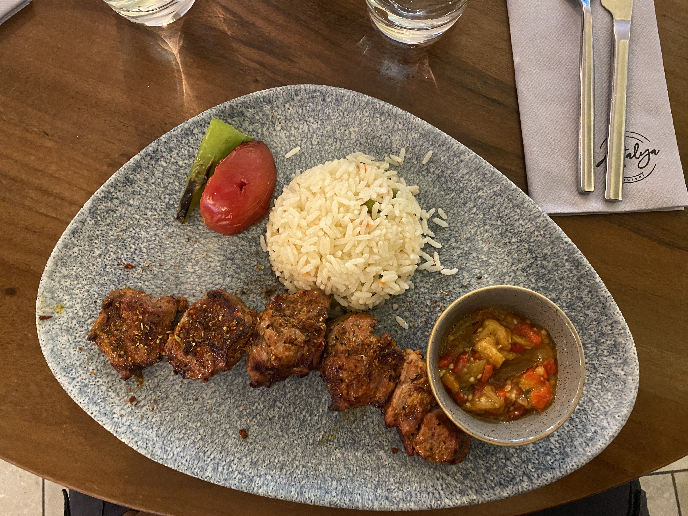
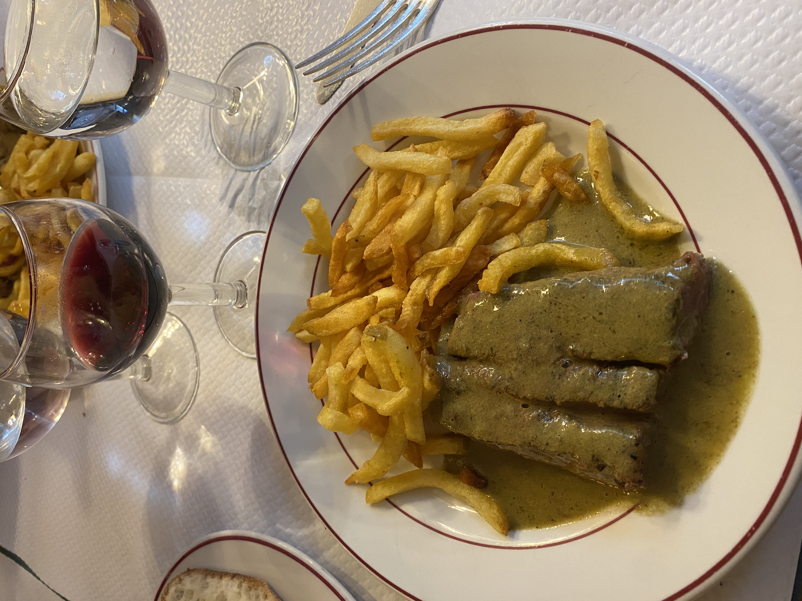

Food (Sneak Peek)

Savoring the succulent Lamb Shish Kebab at Antalya Restaurant in London - a delectable fusion of aromatic spices and tenderly grilled meat, embodying the essence of traditional Turkish flavors.

Indulging in the rich flavors of classic French cuisine at Le Relais de L'Entrecôte, where the steak and grits combined traditional cooking with a touch of gourmet excellence.
Activities (Sneak Peek)

Standing in awe beneath the Eiffel Tower, Paris' iconic symbol of architectural marvel and a timeless testament to human ingenuity and artistry. I'm glad I was able to see this.
Captured from the London Eye: a stunning view of the Thames River gracefully flowing under the majestic bridges, encapsulating the serene beauty of London's cityscape.